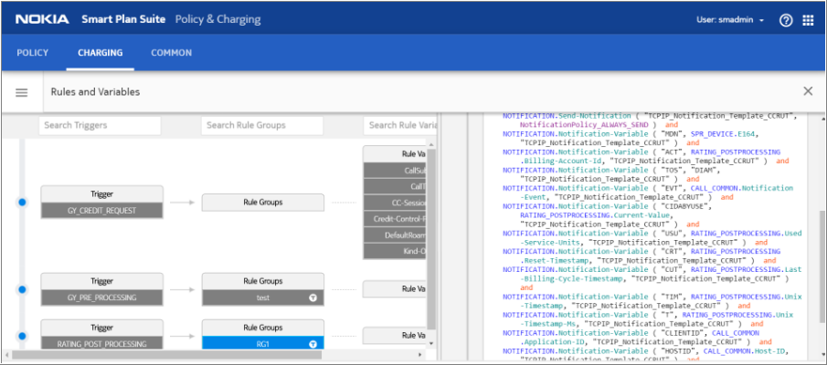
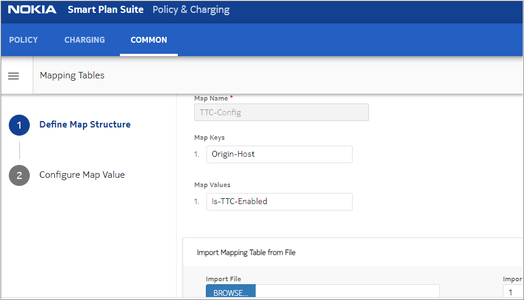
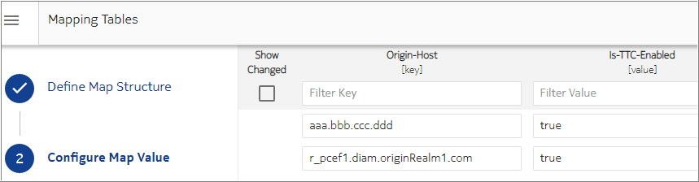
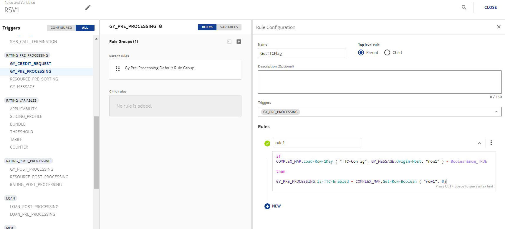
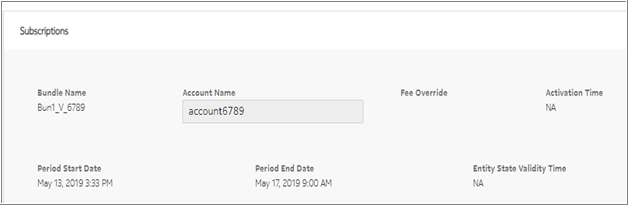
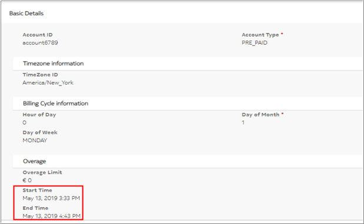
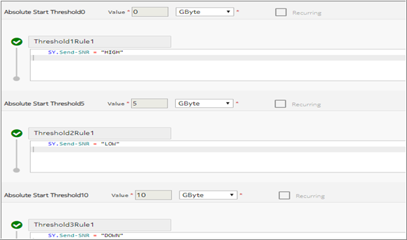
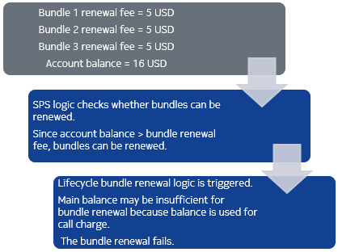

This section explains handling Tariff-Time-Change (TTC), which is the switch time when a tariff is changed for a data session. After a tariff switch is reached, all active user sessions report their session usage by the end of validity period of the current request or receive new quota for resource usage for the new tariff period.
In order to avoid the need for multiple simultaneous quota refresh trials, the traffic usage is split into resource usage before a tariff switch and resources used after a tariff switch, which means a bundle, bucket, or counter may be changed during this switch time.
During a data call, if the TTC time calculated is nearing, then the quota allocation is handled accordingly. The portion of the call before and after the TTC time may have different tariff rates. When a CCR received includes two or three USU instances in one MSCC, the NCC call controller handles the reported usage separately in the USU instances due to the session that ranges crossing TTC times. NCC handles USU before tariff changes and after tariff change in sequence.
 Note:
Note:TTC handling - before and after BCR time
NCC considers the following points while handling the tariff change:
- There is no limitation on the number of USUs. If multiple USUs are received with same
Tariff-Change-Usage (TCU) value, then the service accumulates the
value of same types of USU. The ME application parameter Gy TCU
Indeterminate identifies whether the first USU value with
Tariff-Change-Usage (2 -INDETERMINATE) is added
before the tariff change usage, after the tariff change usage, or is completely
ignored. For details on configuring ME application preferences, see Global Configuration Guide.Note:
- If the reported USU Before Tariff Change (BTC) is greater than zero but less than GSU, then the usage is committed before tariff change to pre-BCR version of subscription (from which reservation was done). In case of carry-over bucket, the initial or unused value in carry-over bucket instance gets updated when the usage is committed before tariff change. If the reported USU before tariff change is greater than GSU, then GSU is committed on pre-BCR version of subscription, and the over committed part (USU before tariff change – GSU) is added to the usage after tariff change. Notification is sent when configured in the rule engine.
- The subscriptions are sorted again at the start of CCR message since after the tariff switch time, and if BCR or subscription activation occurred, then some subscriptions may be switched from valid to invalid and vice-versa. After the subscriptions or charging services are sorted based on predefined priorities, the application condition is checked for each Charging Service (CS) with slice allocation time set to tariff switch time.
- If the reported USU After Tariff Change (ATC) is greater than zero, then the usage is committed based on the newly sorted subscriptions or CS list. The USU ATC is handled as overcommit since the charging services are re-selected.
- A notification is sent after committing the ATC or BTC usage. To support multiple USU instances
in the CCR message, the rule trigger RATING_POST_PROCESSING is changed as
shown in the following figure and the notification variable USU is obtained from
the RATING_POST_PROCESSING source context. 
Supported TTC times
Precondition: For the following table, TTC time is enabled in the Gy pre-processing of rules.
|
Supported TTC times |
Comments |
|---|---|
| End time of subscription | This time refers only to those subscriptions, which are used for reservation. |
| Start time of subscription | This time refers to all subscriptions. |
| Future activation subscriptions | This refers to the future activation time of all subscriptions irrespective of their applicability conditions. |
| Entity lifecycle state validity time | If current state in the entity lifecycle of the resource (from where reservation is done) has a validity time less than the BCR time of resource (from periodic lifecycle), then TTC is not set and instead validity time of the state is set as Validity Time in CCA. |
| End time of bucket | This time refers to all the buckets. |
| End time of counter | This time refers to only the subscription counters. |
| End time of Account | This time refers to period lifecycle of account, which is linked to subscription and is used for reservation. |
| End time of multi-bundle counter | This time refers to period lifecycle of bundle, which is linked to a subscription containing multi-bundle counter, which is applied during reservation. |
| End time of device counter | This time refers to period lifecycle of a counter, which is attached to device and applied during reservation. |
Note:The final TTC time is the nearest time to the Diameter call found after sorting all the times mentioned in the above table.
Entity lifecycle - validity time of current state
Every entity has an entity lifecycle associated to it with defined states and transitions. The state of the resource may have a validity time linked to it. If the state validity time is defined, then transition takes place at the same configured time. The TTC logic considers the minimum of BCR and the validity time of the current state to determine the TTC to be sent to the gateway.
Assume there are two TTC users with the following behavior:
-
If the BCR value of resource is greater than or equal to the value of entity lifecycle state validity time, then TTC is not configured and VT is set as the state validity time.
-
If the BCR value of resource is less than the value of entity lifecycle state validity time, then BCR is configured as TTC.
Note:Example
Configuration or provisioning:
-
Consider two subscriptions Sub1 and Sub2.
-
Sub1 has an entity lifecycle with current state Active at 2018/7/25 09:25:00 with validity time of 1 hour and Sub1 has end time 2018/7/25 11:30:00.
-
Sub2 has an end time or BCR at 2018/7/25 14:30:00.
-
Validity time of 86400 seconds in quota management (slicing profile).
A user makes a data call at 2018/7/25 9:30:00.
-
Few observations for TTC and VT:
During TTC calculation, the end time of Sub1 is compared with its state entity lifecycle.
2018/7/25 10:25:00 (validity time of 1 hour) < end time of Sub1 (2018/7/25 11:30:00) < end time of Sub2 (2018/7/25 14:30:00) < VT (quota management (slicing profile))
Therefore, TTC is not configured and VT is set to 55 minutes (2018/7/25 10:25:00 - current call).
Configuring TTC
The operators enable the TTC feature using the following methods:
-
Complex map: Provision the relationship between Origin-Host and Is-TTC-Enabled flag in the mapping table.
  -
Rules: Configure the charging GY_PRE_PROCESSING trigger to fetch the Is-TTC-Enabled flag.

Note:TTC and TCU AVP support
The Tariff-Time-Change AVP is supported in a CCA message and used within the GSU AVP to determine the tariff switch time. In this feature, global TTC time configured in the RSV, future activation time of subscriptions, or TTC configured in bundle rules or RSV is Tariff-Time-Change, which is an optional parameter.
The Tariff-Change-Usage AVP is supported in CCR message and its value type is date. The TCU AVP is used within USU AVP to distinguish reported usage before and after the tariff time change.
<Used-Service-Unit> ::= <AVP Header: 446 > [Tariff-Change-Usage]The value type of Tariff-Change-Usage AVP is enumerated.
-
0 - UNIT_BEFORE_TARIFF_CHANGE
-
1 - UNIT_AFTER_TARIFF_CHANGE
-
2 - UNIT_INDETERMINATE
The ME application preference Gy TCU Indeterminate indicates how to process the usage with the Tariff-Charge-Usage AVP. See Charging application preferences for more details on this parameter.
Automatic TTC calculation
- You can enable the automatic calculation of TCU before and after a TTC occurrence even when the Gateway is unable to process the TTC, and report USU before and after the TTC.
- To enable this functionality, you must set the Is-TTC-Enabled flag, and Enable-Silent-TTC to true in the GY_PRE_PROCESSING trigger.
- Slice Duration is the difference between the event timestamps of the CCRs, for
the same MSSC, received after and before TTC. For example: Consider the event
timestamps of the following CCRs:
- CCR(U)1 for MSCC1 at T1
- CCR(U)2 for MSCC2 at T2
- CCR(U)3 for MSCC1 at T3
Slice Duration (SD) = Event Timestamp of CCR after TTC (CCR_After_T) - Event Timestamp of CCR before TTC (CCR_Before_T)
- TCU before the TTC occurrence is calculated as follows:
TCU_Before = Round (USU * (TTC - CCR_Before_T) / SD)
- TCU after the TTC occurrence is calculated as follows:
TCU_After = Round (USU * (CCR_After_T - TTC) / SD)
- USU can be Volume (octets), Time (secs), or Units (items).
Note:Note:VT and TTC calculation
When the TTC feature is enabled, the GSU AVP in the CCA message is configured under one of the following conditions:
-
If BCR occurs within the VT of the granted quota and NCC considers the Timezone ID of the account.
-
If future activation time of subscription or Subscription State Validity Time (which is, the entity lifecycle current state time).
During quota allocation, the end time or Subscription Current State Validity Time of the subscriptions used in quota reservation, which are associated with subscription used for quota reservation is checked and the start time or the future activation time is retrieved from all subscriptions and corresponding groups. The start time, end time, and future activation time are sorted, which are later than the call start time and within the VT to get the nearest time and second nearest time. If the subscription does not attach to any period lifecycle, then the associated account period lifecycle start time or end time is used.
After getting the TTC and VT values, if the values of both TTCAF and VTAF are greater than zero, then the TTC and VT values are adjusted as per the following criteria:
-
If the (current time + VT) is between TTC time calculated and TTC time calculated + 2 seconds
TTC = TTC calculated date + 1 second
VT = Time to TTC + 2 seconds
-
If there is a policy counter attached to a device whose status gets changed during TTC date processing, the TTC and VT is calculated as follows:
TTC = TTC calculated date + RAND [1 second, TTCAF]
VT = time to TTC + 1 second
-
Otherwise, if the device does not currently have one or more policy counters whose status change during TTC calculated processing, then the TTC and VT are calculated as follows:
TTC = TTC calculated date + RAND [1 second, MIN(TTCAF, VT-time to TTC-1 second)]
VT = TTC Time calculated date + RAND [2 seconds, MIN(VTs-time to TTC, VTAF)]
Example: TTC and VT adjustment when device has a policy counter that changes during TTC time calculated
Scenario:This example shows a case when there is a policy counter TTC Time calculated within VTs and policy counter status is changed during BCR. TTC and VT for the session are set as per the following formulae:
TTC = TTC Time calculated + RAND[1 second, TTCAF] VT = time to TTC + 1 secondProvisioning: Provision the following entities:
-
Enable the TTC feature. See Configuring TTC for more information.
- Configure VTs (standard VT from quota management (slicing profile)) = 18h = 64800 seconds in the quota management (slicing profile) entity.
- Set the ME application preference VT Adjustment Factor to 3000 seconds.
- Set the ME application preference TTC Adjustment Factor to 300 seconds.
- Create a charging service.
- Create a subscription renewal lifecycle.
Parameter
Value
Name SubscriptionRenewCycle1 Type Bill Cycle Applicable to Subscription Timer value 90 Time units HOURS -
Create a bundle and link the charging service created in the previous step.
Parameter Value Name Bun1_V_6789 Charging Service List CS_V_6789 Bundle Activation Type NORMAL Period SubscriptionRenewCycle1 Max Renewals 10000 Period SubscriptionRenewCycle1 Entity DefaultSubscriptionLifeCycle -
Create an account and attach the Bun1_V bundle. The current data volume is 15 GB.
For account, the period lifecycle is 70 minutes.
 -
Create a device and attach the Bun1_V bundle with period lifecycle of 90 hours. The current data volume is 15 GB.
-
Configure the threshold profile on policy counter. 0 is High, 5 is Low, 10 is Down.

Post-conditions:
-
A Gy call is triggered and CCR(I) status of Device Policy Counter (DPC) is HIGH, CCR(T) USU = 5 GB, and status of DPC is changed to LOW.
-
For CCA(I), BCR time (90 hour) for bundle is out of VTs (18 hour) duration. Even though, policy counter BCR time (70 minutes) is within VT, but since policy counter status is not changed during BCR, it is not considered as time change point. The TTC AVP is not set. VTs (18 hour) is used to set VT AVP in the CCA message.
-
A second Gy call is triggered and CCR(I) status of DPC is LOW. CCR(T) USU = 5 GB and the session ends.
For CCA(I), BCR time (90 hour) for bundle is still out of VTs (18 hour) duration. The policy counter BCR time (70 minutes) is within VT. The current policy status is LOW and BCR logic throttles the status to HIGH. The policy counter BCR time is considered as time change point.
BCR date = 1557736980000 ms
RAND[1 second, TTCAF] = RAND[1 second, 300 seconds] = 269575 ms
New TTC = 1557736980000 ms + 269575 ms = 1557737249575 ms
New VT = TTC – current time +1 second
=1557737249575 ms -1557733096648 ms + 1000 ms
= 4153927 ms = 4154 s
Example: TTC when Bucket has a periodic lifecycle.
This example shows a case where the subscription has an end time on 30 June at 00:00 but the bucket is defined with periodicity as daily, and is ending on 22 June at 00:00.
While calculating TTC for an initial or update which has arrived on 22 June at 20:00, both the end times are considered. Since the bucket is the earliest approaching end time, the TTC is sent as 22 June 00:00.
MIN VT and MIN TTC configuration
MIN VT and MIN TTC is defined in the quota management (slicing profile) ruleset with unit type second. If TTC and VT calculated with tariff time change point is less than the minimum value, the TTC and VT are adjusted based on the minimum value.
The MIN VT and MIN TTC in SLICING_PROFILE are optional attributes, and if not configured, then they are treated as zero. If the MIN TTC greater than MIN VT, then the MIN VT value is ignored and treated as zero.
GSU additional check
When the TTC feature is enabled, after the quota reservation, NCC performs additional check for all the subscriptions used for quota allocation. If the Max Renewal time has reached or if the account is PRE_PAID and has insufficient balance for subscription renewal, then the service ignores the TTC and sets the VT to the subscription end time. In this case, MIN-VT is not used.
Assumptions
Following assumptions apply to the TTC feature:
-
Only the subscription period lifecycle fee is checked. The account lifecycle is considered when the subscription does not have its own lifecycle or account balance is used for charging calls.
-
Irrespective of whether a subscription renewal is checked individually, there may be some instances for which the renewable check is passed. However, the subscription is not successfully renewed as shown in the following example:
 -
There may be cases wherein the TTC logic finds that the subscriptions can be renewed, but they may actually be not renewed when the lifecycle logic checks get executed. For example, consider that there are three subscriptions with same end time associated with same account. When the TTC logic checks the subscriptions one-by-one, it finds that the subscription is renewable, that is, account balance (10) > subscription renewal fee (5). But, all the three subscriptions have same end time as per calculation, the account balance (10) < subscription renewal fees (5*3). In such cases, NCC logic does not take any action.
While considering activation time of subscription, the applicability condition or priority is not checked.Note:
Examples
Consider the following examples for better understanding of this feature:
Example 1
Preconditions: Bob makes a data call. There are two subscriptions SubA and SubB at device level, and SubC at group level.
-
There is a volume bucket BK1 of 500M in SubA, where the SubA end time is 2018/7/31 10:30:00.
-
There is a volume bucket BK2 of 1000M in SubB, where the SubB end time is 2018/8/1 00:00:00.
-
There is a volume bucket BK3 in SubC, where the SubC start time is 2018/7/31 10:00:00 and SubC is in a barred state.
The priority is set as BK3 > BK1 > BK2
Post-conditions:
-
When a CCR-I is received on 2018/7/31 9:55:00, the TTC feature is enabled and VT is 10800 seconds. Quota size is 100 M, BK1 is reserved for 100M, TTC is set to 2018/7/31 10:00:00, ad VT is set to 2100 seconds.
-
When a CCR-U is received on 2018/7/31 10:20:00, report reason is quota exhausted. In USU UNIT_BEFORE_TARIFF_CHANGE is 60M, UNIT_AFTER_TARIFF_CHANGE is set as 40M. BK1 is deducted with 60M and returns 40M, after calculation BK1 is 440M.
When SubC BCR occurs, 40M is deducted from BK3. After calculation, BK3 is 110M. 100M is reserved from BK3 for new quota allocation, TTC is set to 10:30:00, and VT is set to 10800 seconds.
-
When a CCR-T is received on 2018/07/31 10:50:00, report reason is quota exhausted. In USU UNIT_BEFORE_TARIFF_CHANGE is 100M, UNIT_AFTER_TARIFF_CHANGE is set as 40M. BK3 is deducted with 100M after calculation usage and before tariff change, BK3 is 10M.
When BK1 BCR occurs, pre-BCR value is 440M, current BCR version value is 1000M (initial value). For UNIT_AFTER_TARIFF_CHANGE, BK3 is deducted with 10M, remaining value is 0M. BK1 current value is updated to 970M, and unused value is updated to 970M.
Example 2
Preconditions: Bob makes a data call at 2018/7/25 9:30:00. There is one subscription Sub1 at device level, and two subscriptions Sub3 and Sub4 at group level. The validity time is 7200 seconds from the quota management (slicing profile).
-
Sub1 is a monthly renewed subscription with start time set as 2018/6/25 10:00:00 and end time set as 2018/7/25 10:00:00.
-
Sub3 is a one-time (non-renewable) subscription with start time set as 2018/7/18 09:55:00 and end time set as 2018/ 7/25 09:55:00.
-
Sub4 is in the barred state and its future activation time is 2018/7/25 11:00:00.
Post-conditions:
-
If Sub1 and Sub3 are used for the quota reservation, then the end time of Sub1 and Sub3, and activation time of Sub4 are used for TTC calculation.
-
After sorting, 2018/7/25 09:55:00 (end time of Sub3) < 2018/7/25 10:00:00 (end time of Sub1) < 2018/7/25 11:00:00 (activation time of Sub4):
2018/7/25 09:55:00 set as VT because its non-renewable (1500 seconds).
Example 3
Preconditions: Bob makes a data call at 2018/7/25 9:30:00. There is one subscription Sub1 at device level, and two subscriptions Sub3 and Sub4 at group level. The validity time is 7200 seconds from the quota management (slicing profile).
-
Sub1 is a monthly renewed subscription with start time set as 2018/6/25 10:00:00 and end time set as 2018/7/25 10:00:00.
-
Sub3 is a one-time (non-renewable) subscription with start time set as 2018/7/18 09:55:00 and end time set as 2018/ 7/25 09:55:00.
-
Sub4 is in the barred state and its future activation time is set as 2018/7/25 9:40:00.
Post-conditions:
-
If Sub1 and Sub3 are used for the quota reservation, then the end time of Sub1 and Sub3, and activation time of Sub4 are used for TTC calculation.
-
After sorting, 2018/7/25 9:40:00 (activation time of Sub4) < 2018/7/25 09:55:00 (end time of Sub3) < 2018/7/25 10:00:00 (end time of Sub1):
TTC is set to 2018/7/25 09:40:00 and VT is set to 1500 seconds.